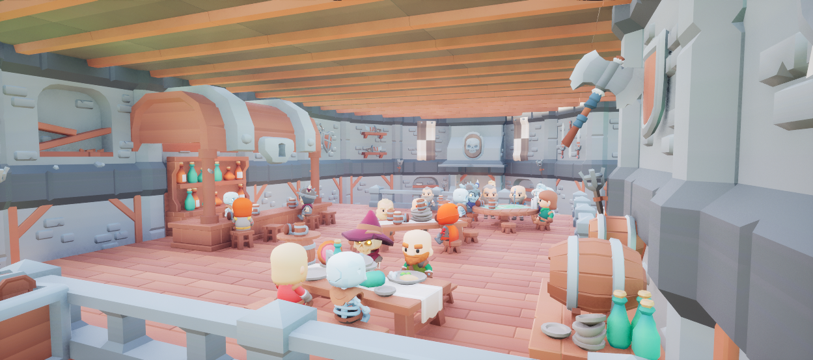
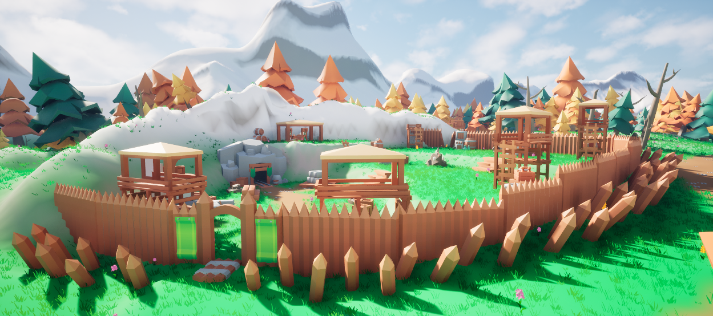
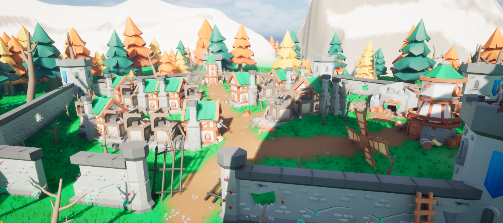
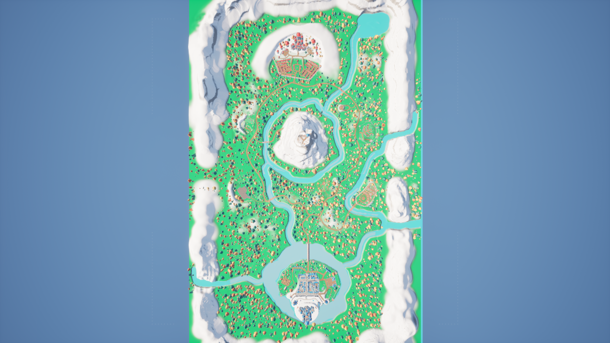
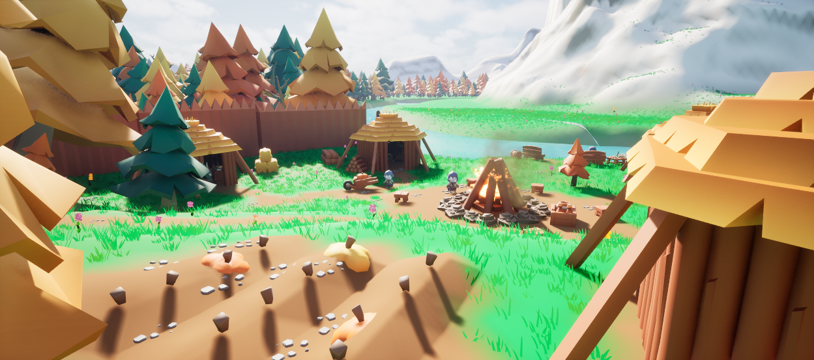
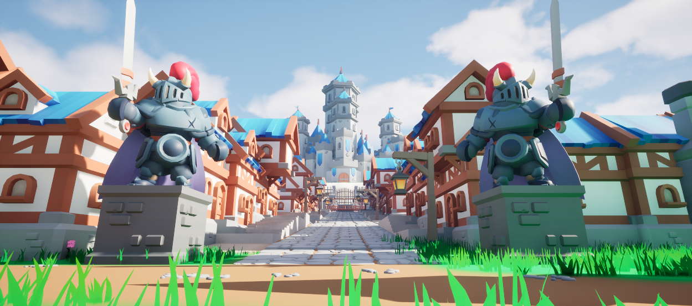

Environment Art — Level Design
Between Two Crowns
A narrative-driven fantasy environment built in Unreal Engine 5, combining environmental storytelling, set dressing and composition with branching exploration and level design.
Overview
Between Two Crowns is a narrative-driven fantasy game created in Unreal Engine 5 using Kenney assets, exploring morality, social division and systemic oppression through environmental storytelling and player choice. The project combines environment art, set dressing, level design and narrative design, transitioning from a linear opening into an explorable world with quests, points of interest and branching paths. Environmental storytelling uses architecture, composition, props and signage to communicate the world through exploration.
"The environment was designed to communicate the story through exploration, composition and detail, allowing players to interpret the world for themselves."
Key Notes
- Role: Environment Artist, Level Designer & Narrative Designer
- Tools: Unreal Engine, Twine, KayKit Asset Packs
- Focus: Narrative flow, atmosphere, composition, environmental storytelling
Gameplay Walkthrough
A walkthrough of the finished experience, showcasing the environment, exploration, narrative encounters and branching player choices.
Level Flow
A visual breakdown of the player's journey, from the linear opening sequence through the open world, side quests and final choice.






Technical breakdown
The environment work focused on composition, set dressing and environmental storytelling, using Kenney's asset library as a production constraint while creating a cohesive and believable world.

Environment Composition
The main town was composed around strong visual hierarchy, using the castle as a dominant landmark to establish the Kingdom's authority. Architecture, streets and environmental silhouettes were arranged to create leading lines towards key locations while maintaining readable navigation through the environment.

Set Dressing & Asset Integration
Narrative information was embedded directly into the environment through propaganda, destroyed buildings, abandoned settlements, environmental props and diegetic signage. The ruined skeleton town was deliberately designed to mirror elements of the human settlement, allowing environmental similarities to challenge the player's assumptions without requiring explicit exposition.

Interactive World & Narrative Design
The open world was structured around exploration, points of interest and branching dialogue rather than a purely linear quest path. Dialogue choices could reveal additional information, unlock quests or prevent access to content, while diegetic navigation encouraged players to interpret the environment and discover locations naturally.
Points of Interest & World Building
Distinct points of interest were designed to give the open world its own locations, stories and visual identities, from the Water Tower and travelling merchants to the skeleton settlements and forest cult. Each location uses set dressing, composition and environmental detail to establish its purpose and encourage exploration, while smaller visual details provide context beyond the main quest.
Level Breakdown
A deeper breakdown of the project's world structure, narrative progression, points of interest and environmental design decisions.